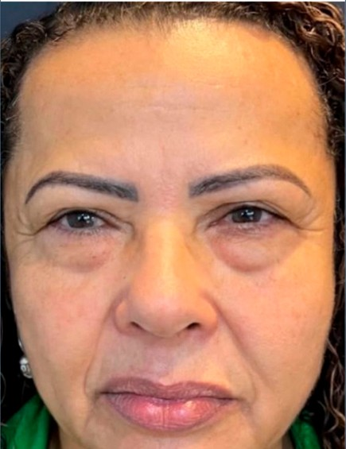
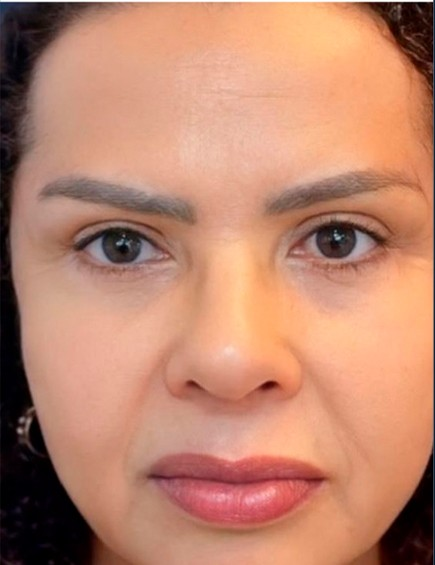
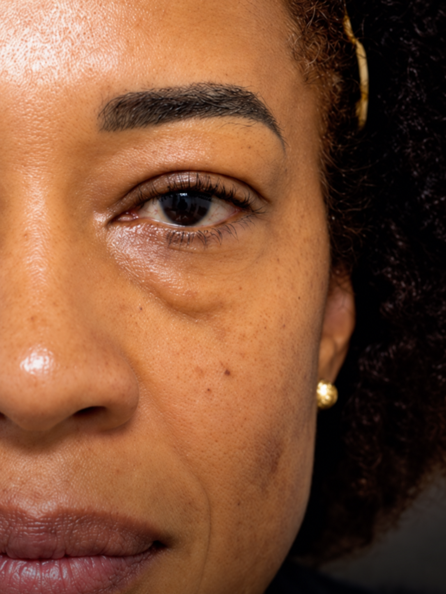
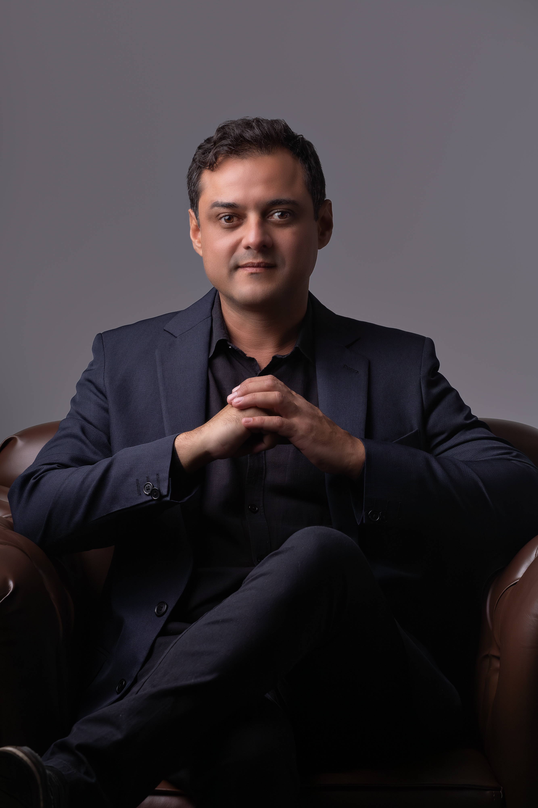

A Blefaroplastia pode ser considerada para tratar determinadas alterações das pálpebras, com um planejamento que respeita as características e a expressão de cada paciente.
Exemplos reais e autorizados de pacientes submetidos à Blefaroplastia pelo Dr. Fernando.

ANTES
DEPOIS* Resultados são individuais e podem variar conforme a anatomia, cicatrização e características biológicas de cada paciente. Procedimento cirúrgico exige avaliação prévia presencial.
A avaliação deve considerar a região ao redor dos olhos, expressão facial e características anatômicas antes de definir qualquer indicação.

Acompanhe o relato de pacientes sobre a consulta, o procedimento e a recuperação com o Dr. Fernando Silveira.
Sobre a recuperação e a sensação de alívio do peso no olhar.
Dr. Fernando explica quando a cirurgia é recomendada.
Do pré-operatório rigoroso aos retornos de acompanhamento.
Dr. Fernando Silveira atua com foco em cirurgia facial e rejuvenescimento, conduzindo cada planejamento de forma individualizada e buscando preservar proporções, expressão e identidade facial.
Sua abordagem cirúrgica afasta-se de qualquer padronização ou artificialismo. Cada estrutura anatômica é cuidadosamente avaliada em consulta, considerando as características e necessidades de cada paciente.

Algumas das principais dúvidas antes da avaliação.